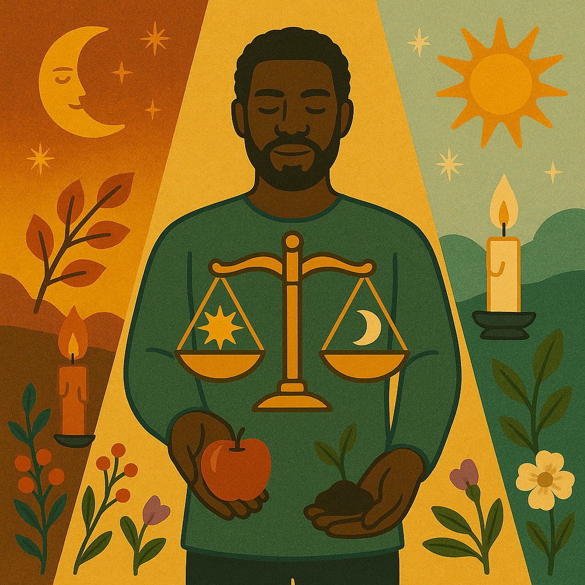
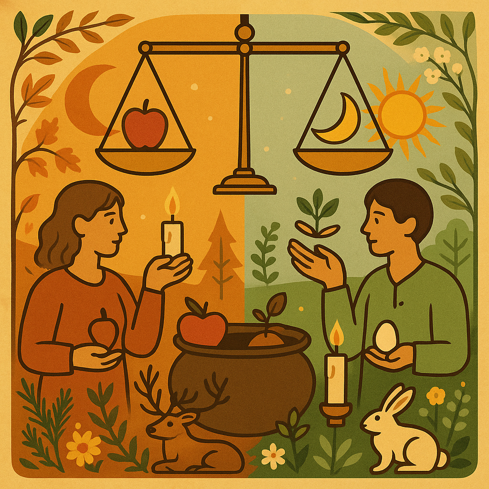

More sun-fire, more harvest glow, more presence.
The previous system felt muted and delicate. The artwork in Mabon/assets suggests something richer: ochre light, ember reds, moss greens, strong symbolic forms, and bold contrast between day and night. This refreshed direction leans into abundance rather than restraint.
Mood
Radiant abundance
Golden, ceremonial, communal, grounded in the second harvest.
Shape language
Rounded + iconic
Large curves, medallions, framed cards, bold icon silhouettes.
Typography
Confident and warm
Fraunces for sculptural headlines, Manrope for clear modern body copy.


Key shift
Use the image palette as the interface palette.
The interface should feel like it emerged from the illustrations rather than sitting beside them. Ochre, ember, moss, parchment, and dusk should do the heavy lifting.
A palette pulled from candlelight, soil, fruit, and late sun.
The strongest notes from the artwork are warm yellow light, rusted orange, rich bark, and calming field greens. Cream stays present, but only as a luminous base rather than the dominant mood.
Ember
#9F3A16
Primary action color, decorative emphasis, harvest warmth.
Copper
#C85F1D
Secondary accent for labels, icon fills, and warm overlays.
Saffron
#E2A126
Glow color for highlights, separators, and celebratory detail.
Moss
#5D7440
Grounding support tone that keeps the page connected to land.
Dusk
#24323A
Primary text and dark section background for stable contrast.
Application rules
- Backgrounds: mix parchment and cream with occasional dusk sections for rhythm.
- CTAs: use ember or dusk with cream text; avoid pale low-energy buttons.
- Highlights: saffron should feel like sunlight touching the layout, not a base wash.
- Cards: keep surfaces warm and tangible with subtle borders and layered shadows.
Contrast note
Body copy should sit in dusk or forest tones on cream-based surfaces. Saffron works best as a supporting glow and headline accent, not for paragraph text.
Headline system
Fraunces
The previous serif felt too fragile for the visual world. Fraunces has weight, sculptural terminals, and enough personality to hold a vibrant hero without becoming ornamental noise.
Second Harvest
Equinox as threshold
Gathering with warmth and intention
Body system
Manrope
Manrope gives the page a cleaner, more contemporary backbone. It reads clearly at small sizes, pairs well with a characterful display face, and keeps the interface strong rather than wispy.
Display
Mabon
Body copy
A market shaped by harvest, local makers, and a felt relationship with land, season, and community.
Caption / metadata
Sunday 5 April · 11am—4pm
Component language for the rebuilt landing page.
Components should feel ceremonial and tactile: pill labels, bold action buttons, framed image cards, and information blocks that read like invitations rather than corporate sections.
Primary CTA
High-contrast, warm, and substantial. Use sparingly so it keeps ceremonial weight.
Feature card
Local abundance
Use dark grounds to intensify the gold and copper accents and create visual pacing.
Info row
What to expect
Makers, food, music, firelight

Image treatment
Use fewer images, but let them land with purpose. Prefer large framed illustrations integrated into sections over disposable thumbnail strips.
Copy guidance
- Lead with invitation: name the gathering before explaining the cosmology.
- Stay grounded: local makers, harvest, music, food, and community should be tangible.
- Use mythic tone lightly: keep it warm and evocative, not overly mystical or abstract.
- Avoid future-year framing: remove references to 2027 until there is an actual programme to show.
Mobile-first invitation energy without the fragility.
The WhatsApp-style preview now carries stronger typography, a warmer gradient structure, and clearer information hierarchy. It feels celebratory and useful, while staying visually rooted in the artwork.
Do
Lead with image, date, and invitation. Keep the path to RSVP obvious.
Avoid
Tiny labels, weak pastel buttons, and image carousels that create horizontal scrolling.
Mabon mystery market
Second harvest glow
A vibrant invitation to gather around local food, music, ritual, and seasonal abundance.
When
Sunday 5 April
11am—4pm
Where
Pure Mountain Farm
Beeja Mara · 4 Tor Doone Lane